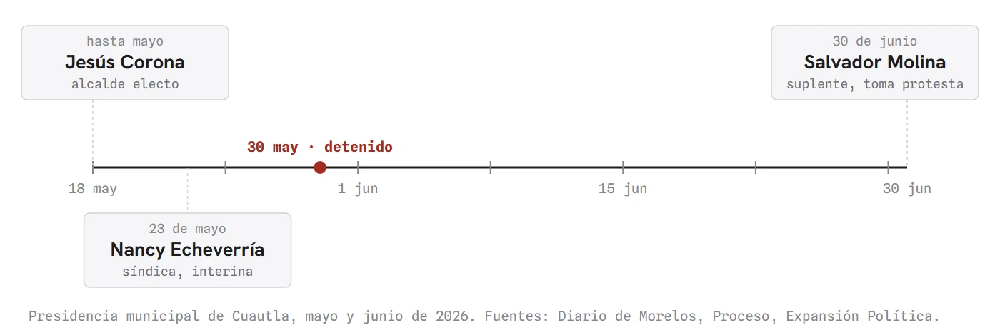
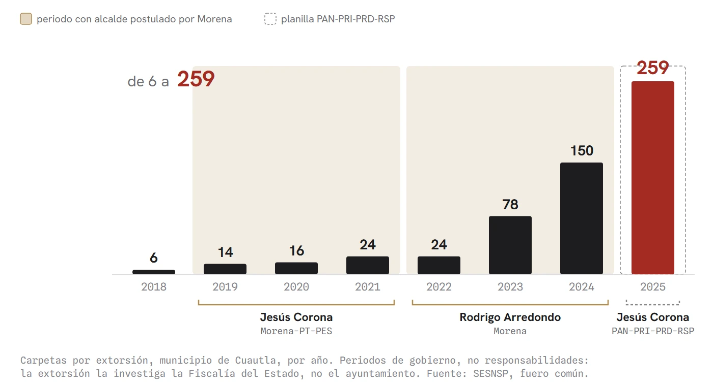
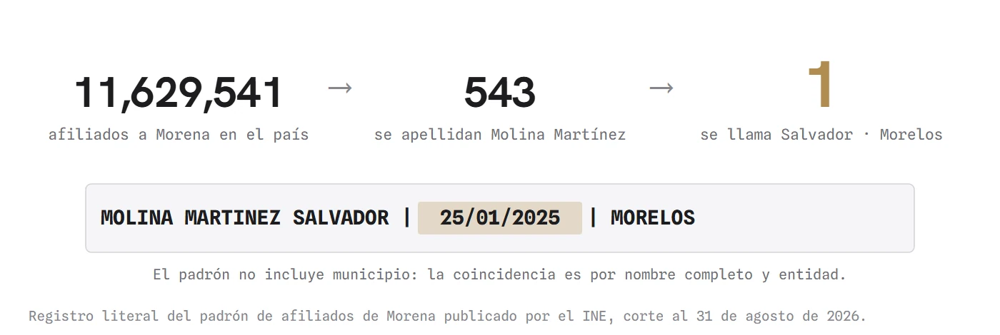
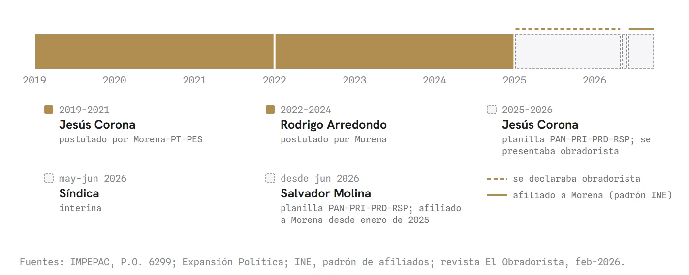

El obradorista de la oposición
En la sesión del Congreso de Morelos por el feminicidio de Claudia Tacoronte, la bancada de Morena atribuyó la inseguridad de Cuautla a la oposición. Las cifras del Secretariado Ejecutivo cuentan otra cosa: la extorsión pasó de 6 carpetas en 2018 a 259 en 2025 y despegó durante la administración de Rodrigo Arredondo, candidato de Morena. El alcalde que la oposición postuló en 2024, Jesús Corona, se presentaba como obradorista, y el presidente municipal de hoy, Salvador Molina, aparece afiliado a Morena desde enero de 2025 en el padrón del INE.
La sesión no era sobre partidos. El Congreso del Estado discutía el feminicidio de Claudia Tacoronte, la estudiante española asesinada en Cuautla, caso en el que ya hay una orden de aprehensión girada contra el presunto responsable, y la diputada Tania Valentina Rodríguez subió a la tribuna a hablar de las que no aparecieron en los periódicos de Europa. Nombró a cinco estudiantes de la UAEM asesinadas desde abril de 2025 y reclamó que un feminicidio moviera al Poder Ejecutivo y los otros cuatro no.
Sobre el municipio dijo que Cuautla es un municipio fallido, que el Cabildo no sirve para nada, que nadie responde por sus ciudadanos y que es tierra de nadie. De ahí salió la frase que circuló después: que es un municipio sin presidente municipal ni presidenta municipal.
Conviene leerla donde está. Viene inmediatamente después de pedir que el Congreso disuelva los poderes en Cuautla y justo antes de afirmar que el Cabildo no sirve para nada. No sostiene que el cargo esté vacante, cosa que ella sabe: sostiene que nadie gobierna. Es la misma frase que dice cualquiera que camine por el centro de Cuautla, y los hechos la acompañan. Entre mayo y junio la presidencia del municipio pasó por tres personas en cinco semanas. La Secretaría del Ayuntamiento acumula nueve cambios de titular en esta administración, según el Diario de Morelos. La salida que la diputada reclamaba desde la tribuna también existe en la ley: el Concejo Municipal que regulan los artículos 185 a 191 de la Ley Orgánica Municipal, designado por el Congreso con nombres a la vista y debate público. Nunca se usó.

Hasta ahí, el reconocimiento es completo. La discrepancia viene después, y no es menor.
Por la bancada de Morena respondió la diputada Jazmín Solano, y la sesión cambió de naturaleza. Recordó que la coalición Dignidad y Seguridad por Morelos, Vamos Todos gobierna al 66 por ciento de la población morelense. Sostuvo que la oposición postuló, respaldó y llevó a la presidencia municipal de Cuautla a Jesús Corona. Afirmó que la inseguridad de la región oriente surgió y se arraigó porque desde la oposición se le abrieron las puertas de los ayuntamientos a presuntos delincuentes. Y cerró con una frase que merece respuesta: quienes le entregaron las llaves del municipio a la delincuencia no tienen hoy autoridad moral para rasgarse las vestiduras en el Congreso.
El primer dato es cierto y está en el Periódico Oficial "Tierra y Libertad": en 2024 a Jesús Corona lo postularon el PAN, el PRI, el PRD y Redes Sociales Progresistas, en el expediente IMPEPAC/CME-CUAUTLA/002/2024. Nadie de esta casa lo niega.
Lo que no resiste es la causalidad. Las cifras del Secretariado Ejecutivo para el municipio de Cuautla, carpetas de investigación del fuero común, están publicadas y cualquiera puede contarlas. Conviene decirlo antes de los números y no después: lo que sigue son periodos de gobierno, no responsabilidades personales, y ninguno de los tres alcaldes aparece señalado por estas cifras. La extorsión registró 6 carpetas en 2018. Entre 2019 y 2021, con Jesús Corona en la presidencia municipal, fueron 14, 16 y 24. Entre 2022 y 2024, con Rodrigo Arredondo, candidato de Morena, fueron 24, 78 y 150. En 2025 llegó a 259. De 6 a 259 en siete años.
El homicidio doloso tiene su año más alto en 2023, con 198 carpetas, durante la administración de Arredondo. El feminicidio acumula sus tres peores años en 2022, 2023 y 2024, con seis, ocho y nueve casos, los tres de esa misma administración. Y la suma de todos los delitos alcanza en 2025 el máximo de la serie completa, 7,543 carpetas.

La curva no despegó cuando llegó la oposición. Despegó antes, mientras el municipio lo gobernaba un alcalde postulado por Morena, y siguió subiendo después. Ese es el hecho, y no se acomoda a ninguna de las dos bancadas.
La curva no despegó cuando llegó la oposición. Despegó antes, mientras el municipio lo gobernaba un alcalde postulado por Morena.
Falta entonces la parte que ninguna quiere oír, y es la que vuelve difícil el reproche de la sigla. El alcalde que la oposición postuló se presentaba públicamente como obradorista. La portada de la revista El Obradorista, de febrero de 2026, lo anuncia como presidente nacional del Movimiento Generacional Obradorista, junto a una fotografía suya con Andrés Manuel López Obrador. En el interior llama "mi amiga" a la gobernadora emanada de Morena y escribe, siendo presidente municipal de un ayuntamiento opositor, que los intereses de los partidos políticos pasan a segundo plano. Veinte días después de ganar la elección por la coalición del PAN, el PRI y el PRD, publicó en su perfil una fotografía saludando, según su propio texto, a Martín López Obrador, hermano del entonces presidente de la República.
Afiliado a Morena no estaba: su nombre no aparece en el padrón que publica el INE, y esta casa lo verificó registro por registro. Militante acreditado no era. Obradorista se declaraba él, con cargo, con revista y con fotografía, y no una sola vez. La pregunta que se abre no es de credencial, es de ideología: un hombre que buscaba compaginar con el gobierno en turno mientras gobernaba con las siglas contrarias.
Queda el presente. El actual presidente municipal, Salvador Molina Martínez, sí aparece en el padrón de afiliados de Morena publicado por el INE, con fecha de afiliación del 25 de enero de 2025, y es el único con ese nombre entre los 11 millones 629 mil 541 registros del padrón nacional. El padrón no incluye el municipio, de modo que la coincidencia es por nombre completo y entidad. Veinticuatro días antes de esa fecha había tomado posesión el ayuntamiento que Morena llama opositor.

Richard Katz y Peter Mair describieron en 1995, en la revista Party Politics, el proceso por el cual los partidos se desprenden de la sociedad que decían representar, se profesionalizan y terminan viviendo del acceso al cargo. Lo llamaron el partido cártel. Su consecuencia práctica es exactamente la que Cuautla exhibe: la competencia electoral no desaparece, pero deja de informar. Cuando la sigla ya no dice de quién es cada quien, el reproche "ustedes lo postularon" pierde casi todo su filo, porque el postulado puede haber venido de enfrente y volver a irse.

Esta columna se debe a sí misma cuatro precisiones. Las cifras son carpetas de investigación, es decir denuncias, no delitos ocurridos; la extorsión tiene una cifra negra enorme y una campaña que anime a denunciar eleva el registro sin que aumente el delito, de modo que parte del salto de 2025 puede explicarse así. La seguridad tampoco es competencia exclusiva del municipio: el homicidio y la extorsión los investiga la Fiscalía del Estado, no el ayuntamiento. Jesús Corona está sujeto a proceso por su presunta responsabilidad en delincuencia organizada y delitos contra la salud, y presunto significa presunto. Contra Salvador Molina no existe proceso ni acusación formal conocida.
La revista donde Corona se proclama obradorista tiene, por lo demás, toda la apariencia de un espacio pagado. Eso importa decirlo: no prueba que alguien lo avalara. Prueba lo que él decía de sí mismo, que es justamente lo que aquí se usa. Una fotografía tampoco es un vínculo, y retratarse con el hermano de un presidente no compromete a ese hermano, ni a la gobernadora, ni a Morena.
A la diputada Tania Valentina hay que darle la razón: Cuautla lleva años sin quien responda por ella, y eso lo sabe cualquiera que viva ahí.
A la bancada que habló por Morena hay que discreparle con el dato en la mano: la extorsión pasó de 6 a 259 carpetas al año, según el Secretariado Ejecutivo, mientras el municipio lo gobernaba, primero con sus siglas y después sin ellas, el mismo círculo de personas.
Siete años y nueve meses desde enero de 2019. Cuatro configuraciones partidistas. El mismo puñado de nombres girando alrededor del escritorio. Queda la pregunta que nadie hizo en tribuna: de quién era Jesús Corona.
- Secretariado Ejecutivo del Sistema Nacional de Seguridad Pública, incidencia delictiva municipal del fuero común, carpetas de investigación, municipio de Cuautla (clave 17006), 2015-2025 y avance 2026. Serie consultable en el Atlas Ciudadano de 45 Digital Noticias, 45digitalnoticias.github.io/Inseguridad-Mexico
- IMPEPAC, relación completa de candidatas y candidatos registrados, proceso electoral 2023-2024, Periódico Oficial "Tierra y Libertad" núm. 6299, expediente IMPEPAC/CME-CUAUTLA/002/2024: old.impepac.mx/wp-content/uploads/2024/Candidaturas/Listado_Periodico_Oficial.pdf
- Instituto Nacional Electoral, padrón de afiliados a partidos políticos nacionales, corte al 31 de agosto de 2026: ine.mx/actores-politicos/partidos-politicos-nacionales/padron-afiliados
- Expansión Política, "Detienen al alcalde de Cuautla, Jesús Corona Damián", 30 de mayo de 2026: politica.expansion.mx/mexico/2026/05/30/detienen-alcalde-cuautla-jesus-corona-damian
- La Jornada Morelos, "Es oficial el triunfo de Jesús Corona Damián en Cuautla", 8 de junio de 2024: lajornadamorelos.mx/sociedad/es-oficial-el-triunfo-de-jesus-corona-damian-en-cuautla
- Diario de Morelos, "Cuautla cambia con Salvador Molina: la inestabilidad persiste en el Ayuntamiento", 28 de agosto de 2026: diariodemorelos.com/noticias/cuautla-cambia-con-salvador-molina-inestabilidad-persiste-en-ayuntamiento
- Revista El Obradorista, febrero-marzo de 2026, Jesús Corona en portada como presidente nacional del Movimiento Generacional Obradorista. Ejemplar en el expediente de esta casa.
- La Unión de Morelos, 16 de febrero de 2026, asistencia del alcalde de Cuautla al primer informe regional de la gobernadora Margarita González Saravia.
- Participaciones en tribuna de las diputadas Tania Valentina Rodríguez y Jazmín Solano, Congreso del Estado de Morelos, sesión sobre el feminicidio de Claudia Tacoronte. Videos y transcripciones en el expediente de esta casa; fecha de sesión pendiente de confirmar en el Diario de los Debates.
- Ley Orgánica Municipal del Estado de Morelos, artículos 171, 172 y 185 a 191. Acervo normativo propio de la casa (LEYES/), con reformas declaradas hasta el Decreto 541, Periódico Oficial 6489 del 12 de noviembre de 2025; vigencia cotejada en la Consejería Jurídica del Poder Ejecutivo del Estado de Morelos.
- Katz, Richard S. y Mair, Peter (1995), "Changing Models of Party Organization and Party Democracy: The Emergence of the Cartel Party", Party Politics, vol. 1, núm. 1, pp. 5-28. DOI: 10.1177/1354068895001001001
Las ligas van a la vista para que cualquiera compruebe por su cuenta. Si alguna dejó de resolver, escríbenos y la reponemos.
SRVO